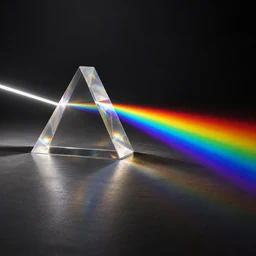

PALEALLOY TOOLS
アイデアを組み立てる、ブラウザーで使える制作ツール。ツールを選んで、すぐに始められます。
PREVISUALIZATION
制作のイメージを組み立てるプリビズツール。既存のPrevis Studioを開きます。

PROMPT BUILDING · 55 LIGHTING TERMS
光の演出・照明・材質を画像から選択。英語のプロンプトを作成してコピーできます。